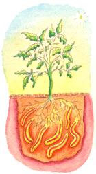
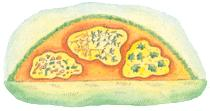
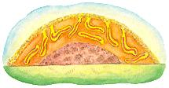
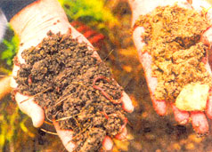
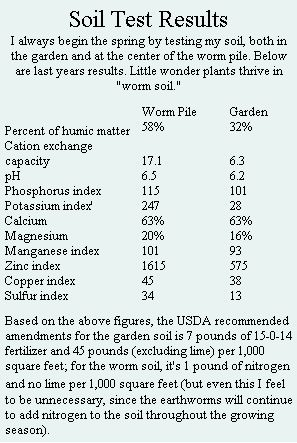

The Earthworm Lawn And Garden
They eat their weight in organic garbage, aerate the soil around your plants and fertilize a garden better than any store-bought product. Here’s how you can put nature’s original gardeners to work.
By James Hale
June/July 2000
Putting nature's original
gardeners to work.
by James Hale
Aiding and abetting earthworms - a practice known as vermiculture - is an easy, eco-friendly route to a better garden. By improving soil structure naturally, worms reduce or eliminate the need for chemical fertilizers and pesticides. Feed your grass clippings, leaf cuttings and kitchen scraps to the worms rather than sending them to the landfill, and in return these tiny tillers will provide you a nutrient-rich humus - perfect for garden and potted plants alike.
While many vermiculturists keep their worms in special bins, I've devised a containerless method that works just as well or better. What follows is my plan for an earthworm lawn and garden. The lawn exists to supply the garden with grass clippings and weeds (both excellent worm food) in the warm months, as well as with leaves and other yard waste in the fall. Key to the plan is what I call the "worm pile," a mound of dirt and organic material that sits aside the garden, accommo dates the densest population of earthworms and produces a nutrient-rich soil. The plan requires some effort, but no real heavy work and no expensive equipment.
Earthworms 101
To reap the full rewards of vermiculture, you'll need to know a few basics so that you can help your worms to thrive in their work.
Earthworms breathe air through their skin, absorbing oxygen and giving off carbon dioxide. Fishermen aren't kidding when they say they are going to "drown some worms." Water can block the movement of air through the skin, causing the worm to suffocate. Even so, an earthworm's body is 80% water and requires a moist environment.
Earthworms are cold-blooded and tend to slow down when temperatures drop below their preferred 70°F.
They feast not on live plants, but on decaying organic material. They also eat dirt, which accumulates in the gizzard (yes, like chickens, worms have gizzards), helping to crush food as it passes through.
Earthworms are sensitive to light and spend most of their days underground, carving tunnels that admit the air and water they need. As a rule, they don't appreciate heavy farm machinery compacting the ground they're trying to tunnel through.
Earthworm populations will expand or contract depending on food supply, temperature and moisture. In general, though, worms reproduce rapidly; a pair will produce an egg capsule weekly containing up to 20 eggs. These eggs will lie dormant until the proper temperature and moisture conditions allow them to hatch - normally within two or three weeks. Within eight to 12 weeks of hatching, the new worms are themselves ready to reproduce.
While worms are a hardy lot, they do face threats: raccoons, moles and mice consider them a favorite food, and strong pesticides and herbicides will kill them.
STARTING YOUR LAWN AND GARDEN
Tools and Equipment
The list is short and simple: You'll need a lawn mower with a grass catcher for collecting grass clippings in summer and leaves in fall. You'll need basic garden hand tools, including a shovel, rake and hoe. If you have a string trimmer, it'll come in handy for clearing the garden area of grass and weeds before mulching. If not, a hoe will do the same job, but it'll take a little longer. A hoe should also be used to cut out weeds, since the last thing you'll want to use on your new earthworm lawn and garden is a chemical herbicide. Besides, weeds make wonderful earthworm food.
You can keep the tiller in the shed; earthworms will take care of the tilling for you.
What About the Worms?
There are some 3,000 species of earthworms, each with its own peculiar dietary needs. For bin-based vermiculture, it is generally recommended that folks use red wigglers (Eisenia foetida). But with the lawn - garden method, there's no need to rush out in search of the perfect "vermibreed." The earthworms already in your soil are ideally suited to live on the organic matter available there. Just feed them regularly and they will multiply rapidly.
The Earthworm Lawn
The absolute best thing you can do for your lawn is to mow it to the right height. Take a sample cutting to the professionals at your local garden center, who should be able to identify the type of grass and recommend its ideal length. When in doubt, take off just enough so that the lawn looks smooth; cutting high will render your grass more resistant to drought. Many a lawn has been ruined by too close a cut. (When using a ride-on mower, be sure to check the tire pressure; your weight on low tires may cause the mower to cut too low.)
While I strongly recommend a chemical-free lawn, if you do use a fertilizer, make certain that it's not harmful to earthworms. Some chemical fertilizers can increase soil acidity to levels intolerable to worms. I'd advise conducting a soil test to see if a fertilizer is even necessary, and if so, in what amount. You may well be introducing chemicals into the environment needlessly.
Finally, pull weeds out by hand or cut them out with a hoe, then save them for the worm pile. Remember, worms love weeds!
The Earthworm Garden
The earthworm garden is mulched with newly cut grass in summer and with lawn mower-chopped leaves in fall. The mulch, which provides the worms organic sustenance, should be thick enough to block sunlight and retain soil moisture, but thin enough to allow, air to get through. (I recommend maintaining a three- to four-inch layer.)
When sizing your garden and worm pile, keep in mind the amount of grass cuttings and leaves you generally have available. You may be able to supplement your organic material by talking to neighbors and local lawn-care professionals, who may be only too happy to have you haul away their grass cuttings, weeds and leaves. Just be sure, no matter the source, that no chemicals were used that may harm your earthworms.
It's a good idea to fence off your garden to protect your worms (not to mention your plantings) from predators.
Plant your earthworm garden as you would any other - in a spot with good, direct sunlight. Clear the garden area by removing the grass and weeds with a hoe. It is not necessary to remove grass and weed roots. I try to hoe just at the surface of the garden to avoid cutting any of my worms in half. (This is a bigger risk during the balmier (days of spring, when worms tend to congregate just beneath the top of the soil.)
After the garden site is cleared, apply your grass mulch. If this is your first year mulching, it may take some tine to build up your earthworm population. Just how long will depend on the condition of your soil, on whether chemical pesticides or fertilizers have been used, and on how many worms you've got in your garden to begin with. Be patient.
Once your garden is mulched, continue to maintain the thickness, covering any bare spots with grass (and later leaves) as the existing layer decays and disappears.
The Earthworm Pile
To the casual observer, the earthworm pile looks like a mound of leaves or grass and dirt. But built right, its a virtual magnet for earthworms. Once they move in - and they will in droves - the worms tend to remain most active near the pile's surface, where they are continuously lured by newly applied organic material.
The earthworm pile is built by alternately layering organic material (grass clippings, weeds, leaves, kitchen scraps, etc.) and dirt. I generally top off the pile - with a layer of grass or leaves, both because I think it looks neater and because it helps to keep the worms cooler in summer and warmer in winter.
Locate your worm pile next to the garden, within the pattern of your sprinkler, since your worms will need watering about as reg ularly as your vegetables. My worm pile is on the side of the garden closest to the house, making it a short trip from the kitchen.
To begin your pile, put down a small circle of kitchen wastes, grass clippings or leaves, and top with a thin layer of dirt. You might consider putting heavy wire screen beneath your earthworm pile, especially if you live in an area that has moles. The openings in the wire should be large enough to allow the earthworms to move from the pile to your garden and back, but small enough to keep furry critters at bay.
Continue to add thin layers of organic material and dirt to your pile until it reaches about two to three feet high. Once it reaches this height, you'll want to build out rather than up, adding layers to the sides of your pile as you gather fresh grass, leaves or kitchen scraps. (If the worm pile is built too high, the weight of the organic material will speed decomposition, hoosting the pile's internal temperature to levels dangerously above the worms' ideal 70°F.)
Remember to always cover the organic materials with a thin layer of dirt. This will keep the worms near the surface of the pile, since they won't have to forage at the bottom for the dirt they need for digestion.
If your existing yard soil has either a high clay or organic material content, you may have to modify the composition of your worm pile. Soils high in clay or organic matter often lack the "grit," or small pieces of rock material, necessary for worm digestion. In such case, you'll want to substitute some of your pile's dirt layers with layers of clean sand, available at any home-improvement store. Or else you can try mixing the sand in with your soil. You may lave to experiment a bit to find the best ratio.

Caring for Your Worms
Lawn grass and leaves will be the mainstay of your earthworms' diet. Kitchen scraps are a secondary, albeit important, source of food. In addition to vegetable and fruit scraps, you can add egg shells, tea bags and coffee grounds. Do not use meat scrap or fat; it's not good for the worms and it may attract scavengers to your pile. Also, do not use pet wastes as worm food.
Don't try to substitute commercial mulch for your lawn's organic matter. Commercial mulches are put into high piles in which temperatures reach as much as 150°F. This kills most of the food value, making the mulch of little use to earthworms.
During the summer, your worm pile will have to share with our garden whatever gals clippings you collect. It may take some trial and error before you figure out how big a pile and garden your lawn can support.
It is not uncommon to see plants sprouting in your worm pile. These spring from seeds discarded along with your kitchen scraps. I allow some of the vines to grow and cover the worm pile, particularly those that are apt to provide the best shade during the hot summer months.
It may also be helpful in especially hot weather to shade your worm pile with a cloth net cover that will protect it from the sun, while still allowing rain through.
Come winter, maintain your worm pile with kitchen wastes or leaves. Again, covering the outside of your pile with leaves will help to retain both the warmth and the moisture your worms will need to survive the coldest months.
Opening the Pile
Once a year, in spring, the worm pile j is opened to provide nutrient-rich soil for planting. Start by making an opening just large enough to extract from the center of the pile enough dirt to conduct a soil test, so you'll know what you're working with. (See "Soil Test Results")
Once you have the results, choose a warm spring day to break open the pile to harvest planting soil. Keep in mind that you will be disrupting the worms' tunneling activities and exposing them to uncomfortable and potentially dangerous levels of light. Try to go easy on them.
Using a shovel or pitchfork, carefully remove part of the pile's outer layer, which will consist of undigested organic material, most of the active earthworms and dirt. Uncover only as much "worm soil" as you can use at any given time, to avoid subjecting worms needlessly to cold or light. Place the removed material on the ground nearby, add a thin layer of fresh organic matter and dirt, and - voila - you've started next year's worm pile. Continue to build this new pile with kitchen scraps and whatever organic material is left over after you mulch your garden.
With the outer layer removed from your existing pile, you'll be able to see the inner soil, made up of digested and undigested organic material, dirt, earthworms and earthworm eggs. Use this worm soil just as you would potting soil.
Planting with Worm Soil
You can use worm soil to grow either seeds or started plants. For seeds, dig a trench large enough to accommodate the expected root balls, put in a layer of worm soil, add the seeds, then cover with your garden soil. After the seeds have begun to sprout, add a layer of grass mulch.
For started plants, dig holes slightly larger than the anticipated full-grown root balls. Fill the holes with worm soil, then plant your plants. Mulch with a fresh layer of grass clippings.
It's best to dig trenches and holes before opening the worm pile, since the worm soil, which contains live worms and eggs, should be returned to a warm, moist, dark environment as quickly as possible.
I have tried to use worm soil as a side dressing for existing plants ...with mixed results. The plants saw some improvement, but not enough to warrant repeating the experiment.
Continue to mulch your rows throughout the growing season with grass clippings, leaves and other yard wastes, ensuring your garden worms a steady supply of food. Your worms will thank you with the best soil your plants have ever known.
Read more GARDENING articles at www.motherearthnews.com
Related info:
Using Worm Soil to Advantage
|
The earthworm garden, left, is mulched with grass clippings in summer and cut leaves in fall. A three- or four-inch layer will block sunlight, but still allow air through. Just beneath the surface of the soil, the earthworms feast on the organic mulch as it decays, transforming it into nutrient-rich castings, or manure. These castings are a complete - and wholly natural - plant food. At right, garden worms dig tunnels, allowing plant roots to penetrate deep into the soil. |
 The worm pile is built by alternating layers of dirt and organic material, including grass clippings, weeds, cut leaves and kitchen scraps. Keep the pile covered with a thin layer of grass or leaves; it'll look neater and will keep the worms cooler in summer and warmer in winter. Over time, your worms will digest the organic matter so that, when you open your pile in spring, you'll find at the center a soil rich in worms, worm eggs and castings. |
 Worm soil (left) boasts all of the nutrients plants need, obviating traditional soil amendments. |
|
 |
 |
 |
|
 |
|
|